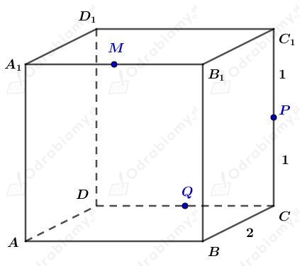

Rysunek:

Niech punkty M, P, Q będą środkami krawędzi sześcianu - odpowiednio - A1B1, CC1, CD.
Zauważmy, że długość przekątnej ściany bocznej wynosi 2√2 oraz (z tw. Pitagorasa) długość odcinka |BP|=√5.
a)
Wskażemy przykładowy odcinek o końcach należących do krawędzi sześcianu, którego długości rzutów prostokątnych na ściany sześcianu przyjmują wartość √5 oraz 2√2.
Jest to odcinek MC.
Wyjaśnienie:
Punkty M i C rzutujemy na ścianę ADD1A1 i otrzymujemy odpowiednio punkty A1 i D. Długość tego odcinka to 2√2.
Punkty M i C rzutujemy na ścianę ABCD i otrzymujemy odpowiednio punkt będący środkiem krawędzi AB i punkt C. Długość tego odcinka to √5.
b)
Wskażemy przykładowy odcinek o końcach należących do krawędzi sześcianu, którego długości rzutów prostokątnych na ściany sześcianu przyjmują wartość 2 oraz 2√2.
Jest to odcinek MQ.
Wyjaśnienie:
Punkt M i Q rzutujemy na ścianę ABCD i otrzymujemy odpowiednio punkt będący środkiem odcinka AB i punkt Q. Długość tego odcinka to 2.
Punkty M i Q rzutujemy na ścianę BCC1B1 i otrzymujemy odpowiednio punkty B1 oraz C. Zatem |B1C|=2√2.
c)
Wskażemy przykładowy odcinek o końcach należących do krawędzi sześcianu, którego długości rzutów prostokątnych na ściany sześcianu przyjmują wartość √2 oraz √5.
Jest to odcinek MP.
Wyjaśnienie:
Punkty M i P rzutujemy na ścianę ABCD i otrzymujemy odpowiednio punkt będący środkiem krawędzi AB i punkt C. Długość tego odcinka to √5.
Punkty M i P rzutujemy na ścianę CDD1C1 i otrzymujemy odpowiednio punkt będący środkiem krawędzi C1D1 i punkt C. Długość tego odcinka to √2.
Trójkąt A1B1C1 jest rzutem prostokątnym trójkąta ABC na płaszczyznę P.
a)
Długości boków trójkąta A1B1C1 są mniejsze lub równe długościom boków trójkąta ABC.
Zatem obwód trójkąta A1B1C1 nie może być większy od obwodu trójkąta ABC.
b)
Korzystając z przykładu a) stwierdzamy, że pole trójkąta A1B1C1 nie może być większe od pola trójkąta ABC.
c)
Miara kąta A1B1C1 może być większa od miary kąta ABC.
Podamy brakujące uzasadnienia dowodu twierdzenia o prostej prostopadłej do płaszczyzny.
Uzasadnienie 1 - |BD|=|CD| oraz |BF|=|CF|
Zauważmy, że ponieważ AD to wspólny bok, |AB|=|AC|, |∢BAD|=|∢DAC|, zatem na mocy cechy przystawania bkb mamy △BAD≡△DAC, czyli |BD|=|CD|.
Zauważmy, że ponieważ AF to wspólny bok, |AB|=|AC|, |∢BAF|=|∢FAC|, zatem na mocy cechy przystawania bkb mamy △BAF≡△FAC, czyli |BF|=|CF|.
Uzasadnienie 2 - △BDF≡△CDF
Wiemy, że
Zatem na mocy cechy bbb przystawania trójkątów, △BDF≡△CDF.
Uzasadnienie 3 - |CE|=|BE|
Odcinki CE i BE są wysokościami opuszczonymi na podstawę DF trójkątów przystających △BDF i △CDF, czyli |CE|=|BE|.
Uzasadnienie 4 - ∢BAE=∢CAE=90o
Skoro |CE|=|BE|, to trójkąt BEC jest równoramienny i odcinek AE jest wysokością tego trójkąta. Zatem ∢BAE=∢CAE=90o.